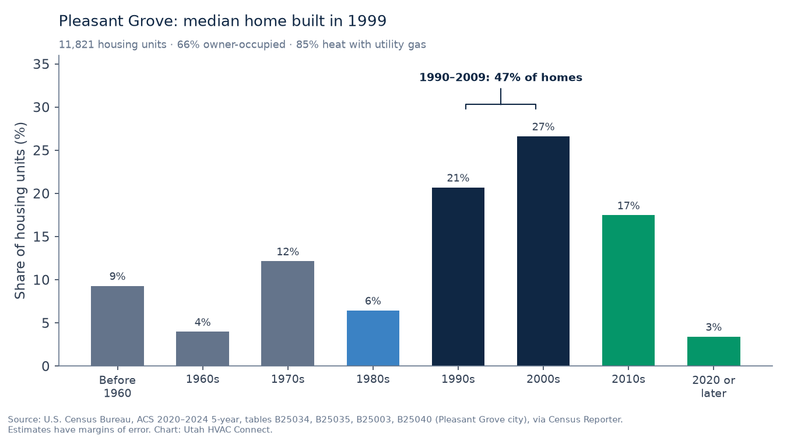

TL;DR
- Pleasant Grove is an established-home city: about 38,088 residents in 2025, up less than 1% since 2020, with a median home built in 1999 (UPC 2025; ACS 2020–2024).
- 47% of homes were built from 1990 through 2009, so original and first-replacement furnaces and ACs are common; about 25% predate 1980 and 21% are from 2010 or later.
- The city doesn’t run a power utility; Rocky Mountain Power’s map lists Pleasant Grove, so Wattsmart (up to $1,450 dual fuel) applies if it’s on your bill, plus ThermWise gas rebates.
- Permits: the Building Division requires one for any heating-system modification, through its online portal.
- Free request; matching depends on licensed shops that serve your ZIP. No prices here.
Pleasant Grove sits between American Fork and Lindon at the foot of Mount Timpanogos. Unlike most of its neighbors, it’s barely growing: about 38,088 residents in 2025, up less than 1% from 37,733 in April 2020, while its housing stock grew about 7%, from 11,389 to 12,182 units (Utah Population Committee 2025 estimates). American Fork, next door, grew about 30% over the same period. That makes Pleasant Grove mostly an established-home city, and most HVAC questions here are about furnaces and ACs that are already in place. This page collects the local facts we could source.
Utah HVAC Connect is a matchmaker under Apex Lead Group, LLC. We connect homeowners with licensed Utah HVAC contractors; we’re not a contractor, and we don’t dispatch, diagnose, or quote. We don’t name or vouch for any particular shop on this page, and we can’t promise a match in every ZIP: matching depends on licensed shops that serve your ZIP.
Housing data

Nearly half of Pleasant Grove’s homes (47%) were built from 1990 through 2009, and the median home dates to 1999. There’s also an older core: about 13% of units predate 1970 and another 12% were built in the 1970s. About 21% date from 2010 or later. Single-family detached homes make up about 60% of the housing stock, and 66% of occupied homes are owner-occupied (ACS tables B25034, B25035, B25003, B25024).
| Area | Housing units | Median year built | Owner-occupied | Built before 1990 | Built 1990–2009 | Built 2010 or later | Heat with utility gas | Heat with electricity |
|---|---|---|---|---|---|---|---|---|
| Pleasant Grove (city limits) | 11,821 | 1999 | 66% | 32% | 47% | 21% | 85% | 12% |
| ZIP 84062 (includes Cedar Hills) | 14,483 | 2001 | 70% | 28% | 52% | 20% | 85% | 12% |
Source: U.S. Census Bureau, ACS 2020–2024 5-year estimates (tables B25034, B25035, B25003, B25040), via Census Reporter (Pleasant Grove, 84062). Owner-occupied and heating fuel are shares of occupied homes; year built is of all housing units. Estimates have margins of error.
Which ZIP am I in? By land area in the Census Bureau’s 2020 ZIP-to-place relationship file, about 98% of Pleasant Grove is in 84062, with a sliver in 84042. But 84062 isn’t only Pleasant Grove: almost all of Cedar Hills is in it too, along with small parts of Lindon and Highland (Census relationship file). That’s why we show city-limit numbers first. Enter your own ZIP on the form.
What the numbers suggest
General context, not a diagnosis of your system:
- Homes from 1990 through 2009 (47%): many are on their original furnace and AC or their first replacement. Furnace makers commonly cite a 15-to-20-year typical lifespan (American Standard), so repair-or-replace questions are common. Our repair-or-replace guide for 1990s–2001 homes was written for the city next door and fits many Pleasant Grove houses.
- Homes before 1980 (about 25%): most are likely on at least their second furnace. Replacing one again raises questions about venting, sizing, and old ductwork; see our guide to replacing the furnace in a 1970s–80s home.
- Homes from 2010 or later (21%): the furnace or a failed part may still be under manufacturer warranty. Check before you pay for a repair: how new-home furnace warranties work.
- Heating fuel: 85% of occupied homes heat with utility gas and 12% with electricity. If your home has electric heat and you’re weighing an upgrade, see AC and heat pump replacement.
If heat is out right now, start with no-heat help.
Heating and cooling season
NOAA has no climate-normals station in Pleasant Grove, so we use the Provo BYU station to the south as a regional guide. Its 1991–2020 normals show about 4,968 heating degree days a year, peaking at 995 in December and 1,007 in January, with an average January low of 23.8°F, and about 1,205 cooling degree days (NOAA annual normals; monthly). Homes on the bench toward the mountain sit higher than the station, so treat these numbers as a guide, not a reading for your street.
Utilities and rebates
- Electricity: Pleasant Grove doesn’t run a city power utility. Its utilities page covers culinary and secondary water, sewer (treated by TSSD), storm water, and trash through Republic Services, not electricity (Pleasant Grove utilities). Rocky Mountain Power’s service-area map lists Pleasant Grove (Rocky Mountain Power service area map). That’s different from Lehi and Provo, which run their own city electric utilities. Check the name on your bill.
- Rocky Mountain Power (Wattsmart): as listed on October 28, 2026, $1,450 for an AHRI-rated dual-fuel heat pump system ($700 if not AHRI-rated), installed by a program-participating contractor in an existing single-family home, with the application filed within 180 days. New construction and manufactured homes don’t qualify (Wattsmart).
- Gas (Enbridge Gas ThermWise): if your gas bill is from Enbridge Gas, ThermWise lists $300 for a 95%–97.4% AFUE furnace, $350 for 97.5% AFUE or higher with an ECM, and $700–$1,200 for qualifying dual-fuel systems, with the request postmarked within six months of installation (ThermWise).
- Provo’s heat pump rebate doesn’t apply here. It’s only for Provo Power customers; see how the Provo rebate works if you’re comparing notes with someone in Provo.
- Federal: the 25C tax credit isn’t allowed for equipment placed in service after December 31, 2025 (IRS).
Permits
Pleasant Grove’s Building Division requires a building permit for “any modification or alteration of plumbing, heating or electrical system.” Permits are processed electronically through the city’s portal, and applications need a contractor’s license number or an Owner-Builder Certification Form. The division says a permit technician calls to collect the plan-check fee, which is applied toward the permit. It enforces the 2024 International Mechanical Code, 2024 International Fuel Gas Code, and 2024 International Energy Conservation Code with Utah amendments. The division is at 70 S 100 East, (801) 785-5045 (Pleasant Grove Building Division).
Most homeowners have the contractor pull the permit. Ask whether it’s included in the bid, and for furnace or AC replacements, who schedules the inspection.
Check the license before work starts
Before anyone works on your system, look the company up on DOPL’s free Licensee Lookup & Verification. You want an Active status and an HVAC classification (H100, or the older S350), under the same business name that’s on your estimate. Step-by-step: how to check a Utah HVAC license.
How matching works
- Tell us what you need on the free Get Help form: service type (Repair, Replace, Install, Tune-up, or “I’m not sure”), urgency (Today, This week, or Planning), your ZIP, and when it’s reasonable to reach you.
- We match licensed Utah shops that serve your ZIP. We don’t dispatch technicians, diagnose, or write proposals.
- Matched pros may reach out using the contact details you provide. You talk with them, compare, and hire who you want, or no one. No homeowner fee and no obligation. More: how it works and how we make money.
Related guides
- American Fork (84003): the next city north, with newer growth
- Original furnace in a 1990s–2001 home: repair or replace?
- Provo & Orem: local data for the cities south along I-15
- Furnace replacement in Utah: repair-or-replace questions, rebates, permits
- AC and heat pump replacement in Utah: AC-only, dual fuel, or all-electric
- Furnace not working? No-heat help in Utah: safety first, basic checks
How we put this page together
This page was written by the Utah HVAC Connect editorial team, not by a contractor. We used public data only: NOAA 1991–2020 climate normals, U.S. Census Bureau American Community Survey (ACS) estimates, and the rebate, permit, and licensing pages published by Utah utilities, cities, and DOPL, each checked on the date shown above. For this page we pulled city- and ZIP-level housing data for Pleasant Grove, checked how 84062 lines up with city limits using Census geography files, read the city’s own building and utility pages, and checked Rocky Mountain Power’s service-area map. We don’t publish prices we can’t source, contractors can’t pay to be mentioned here, and we don’t name partner shops on this page. Programs and rules change, so confirm details with the program or your contractor before you sign anything. See our editorial policy. Spot an error? Email hello@utahhvacconnect.com.
Sources
- U.S. Census Bureau, ACS 2020–2024 5-year, tables B25034, B25035, B25003, B25040, B25024, Pleasant Grove city and ZCTA 84062, via Census Reporter API
- Census Reporter profile, Pleasant Grove city
- Census Reporter profile, ZCTA 84062
- U.S. Census Bureau, 2020 ZCTA-to-place relationship file
- Kem C. Gardner Policy Institute / Utah Population Committee, 2025 subcounty dataset (CSV, April 2020 base through July 2025)
- Kem C. Gardner Policy Institute / Utah Population Committee, 2025 subcounty estimates (May 2026)
- NOAA NCEI, 1991–2020 annual normals, Provo BYU (USC00427064)
- NOAA NCEI, 1991–2020 monthly normals (heating degree days, average low), Provo BYU
- Pleasant Grove City, Utilities
- Rocky Mountain Power, service area map
- Pleasant Grove City, Building Division
- Rocky Mountain Power, Wattsmart dual fuel heat pumps (UT)
- Enbridge Gas, ThermWise appliance rebates
- American Standard, furnace lifespan
- IRS, FAQs on 25C under Public Law 119-21
- Utah DOPL, Licensee Lookup & Verification
Questions about the service: hello@utahhvacconnect.com.
FAQ
Do you cover Pleasant Grove?
You can send a free request from any Pleasant Grove ZIP. Matching depends on licensed Utah HVAC shops that serve your ZIP, so we can’t promise a match for every address, and we don’t name or vouch for particular shops. If a match is made, those pros may reach out.
Who provides electricity in Pleasant Grove?
Pleasant Grove doesn’t run a city electric utility, and Rocky Mountain Power’s service-area map lists the city. Check the name on your bill: Wattsmart rebates need Rocky Mountain Power.
Do I need a permit to replace a furnace or AC in Pleasant Grove?
Yes. Pleasant Grove’s Building Division requires a permit for any modification or alteration of a heating system, applied for through the city’s online portal. Most homeowners have the contractor pull it.
Is Cedar Hills included?
Cedar Hills shares ZIP 84062 with Pleasant Grove, so the ZIP-level numbers on this page include it. You can send a request from a Cedar Hills address the same way. Permits there go through Cedar Hills, not Pleasant Grove.
Which rebates apply in Pleasant Grove?
If your gas is Enbridge Gas, ThermWise furnace ($300–$350) and dual-fuel ($700–$1,200) rebates. If your electricity is Rocky Mountain Power, Wattsmart lists up to $1,450 for an AHRI-rated dual-fuel system in an existing home. As listed October 28, 2026.
Is the request free, and do you send the technician?
The request is free for homeowners with no obligation to hire. We don’t send technicians or quote; we’re a matchmaker that connects you with licensed Utah HVAC shops that serve your ZIP.